JEE Main 2024 (Session 1), 1 Feb Shift 1: worked solutions for review
Questions and options are NTA’s own images; the green option is NTA’s final key. Every solution below was written by Claude
and checked against NTA’s final key. It is not NTA’s solution. Please mark anything unclear or wrong.
Q1 · Mathematics · MCQ · ID 9561771036
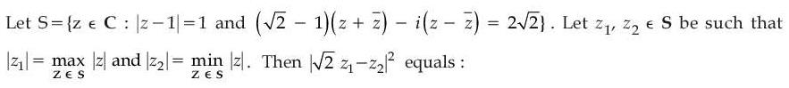
(1) 
(2) 
(3) 
Hint 1: Write z = x + iy. The first condition is a circle; turn the second into a line.
Hint 2: z + z̄ = 2x and z − z̄ = 2iy, so the second condition is (√2 − 1)x + y = √2. Intersect it with (x − 1)² + y² = 1.
What this tests: Complex numbers as points: a circle meeting a line.
1. The two points are 1 + i (|z|² = 2) and (1 + 1/√2) + i/√2 (|z|² = 2 + √2).
2. z1 = (1 + 1/√2) + i/√2, z2 = 1 + i.
3. √2 z1 − z2 = (√2 + 1 − 1) + i(1 − 1) = √2, so |√2 z1 − z2|² = 2.
Answer: (2)
If this felt hard: Revise 'Complex Numbers' (loci).
Claude’s answer: 2 · NTA final key: 2 · agrees · Answer recomputed with SymPy (tools/verify_pyq_solutions.py)
Q2 · Mathematics · MCQ · ID 9561771037
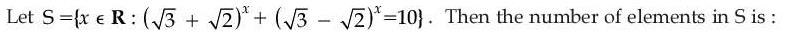
(1) 
(2) 
(3) 
(4) 
Hint 1: Notice (√3 + √2)(√3 − √2) = 1. Put t = (√3 + √2)x.
Hint 2: t + 1/t = 10, so t² − 10t + 1 = 0 and t = 5 ± 2√6 = (√3 ± √2)².
What this tests: Exponential equations with reciprocal bases.
1. t = (√3 + √2)² gives x = 2; t = (√3 − √2)² = (√3 + √2)−2 gives x = −2.
2. Two elements.
Answer: (3)
If this felt hard: Revise 'Complex Numbers and Quadratic Equations' / exponent rules.
Claude’s answer: 3 · NTA final key: 3 · agrees · Answer recomputed with SymPy (tools/verify_pyq_solutions.py)
Q3 · Mathematics · MCQ · ID 9561771038
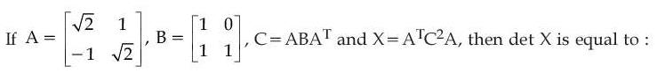
(1) 
(4) 
Hint 1: You only need determinants. Use det(PQ) = det P · det Q and det(Aᵀ) = det A.
Hint 2: det A = 2 + 1 = 3, det B = 1, det C = 3 × 1 × 3 = 9.
What this tests: Properties of determinants.
1. det X = det A × (det C)² × det A = 3 × 81 × 3 = 729.
Answer: (2)
If this felt hard: Revise 'Determinants'.
Claude’s answer: 2 · NTA final key: 2 · agrees · Answer recomputed with SymPy (tools/verify_pyq_solutions.py)
Q4 · Mathematics · MCQ · ID 9561771039
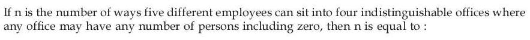
(1) 
Hint 1: The offices are indistinguishable, so you are just splitting 5 people into at most 4 unlabelled groups.
Hint 2: Count partitions of 5 people into exactly 1, 2, 3 or 4 non-empty groups (Stirling numbers S(5, k)).
What this tests: Distributing distinct objects into identical boxes.
1. S(5, 1) = 1, S(5, 2) = 15, S(5, 3) = 25, S(5, 4) = 10.
2. n = 51.
Answer: (1)
If this felt hard: Revise 'Permutations and Combinations'.
Claude’s answer: 1 · NTA final key: 1 · agrees · Answer recomputed with SymPy (tools/verify_pyq_solutions.py)
Q5 · Mathematics · MCQ · ID 9561771040
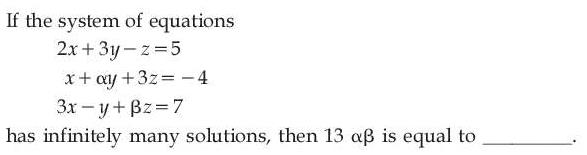
Hint 1: Infinitely many solutions: the third equation must be a combination p(eq 1) + q(eq 2), constants included.
Hint 2: x: 2p + q = 3. Constants: 5p − 4q = 7.
What this tests: Systems with infinitely many solutions.
1. p = 19/13, q = 1/13.
2. y: 3p + αq = −1 gives α = −70. z: −p + 3q = β gives β = −16/13.
3. 13αβ = 13 × (−70) × (−16/13) = 1120.
Answer: (2)
If this felt hard: Revise 'Determinants'.
Claude’s answer: 2 · NTA final key: 2 · agrees · Answer recomputed with SymPy (tools/verify_pyq_solutions.py)
Q6 · Mathematics · MCQ · ID 9561771041
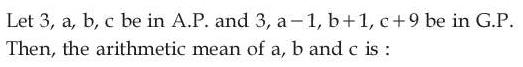
Hint 1: Write a, b, c as 3 + d, 3 + 2d, 3 + 3d. Then use the GP condition on the first three GP terms.
Hint 2: GP: 3, 2 + d, 4 + 2d, 12 + 3d. (2 + d)² = 3(4 + 2d).
What this tests: AP and GP together.
1. d² − 2d − 8 = 0, so d = 4 or −2. d = −2 makes GP terms zero, so d = 4.
2. a, b, c = 7, 11, 15 (GP 3, 6, 12, 24 checks).
3. Mean = 11.
Answer: (1)
If this felt hard: Revise 'Sequences and Series'.
Claude’s answer: 1 · NTA final key: 1 · agrees · Answer recomputed with SymPy (tools/verify_pyq_solutions.py)
Q7 · Mathematics · MCQ · ID 9561771042
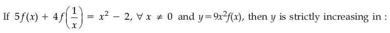
Hint 1: Replace x by 1/x to get a second equation, then solve the pair for f(x).
Hint 2: 5f(1/x) + 4f(x) = 1/x² − 2. Eliminate f(1/x): f(x) = (5x² − 2 − 4/x²)/9.
What this tests: Functional equation f(x), f(1/x); increasing functions.
1. y = 9x²f(x) = 5x⁴ − 2x² − 4.
2. y' = 4x(5x² − 1) > 0 when −1/√5 < x < 0 or x > 1/√5.
Answer: (3)
If this felt hard: Revise 'Application of Derivatives'.
Claude’s answer: 3 · NTA final key: 3 · agrees · Answer recomputed with SymPy (tools/verify_pyq_solutions.py)
Q8 · Mathematics · MCQ · ID 9561771043
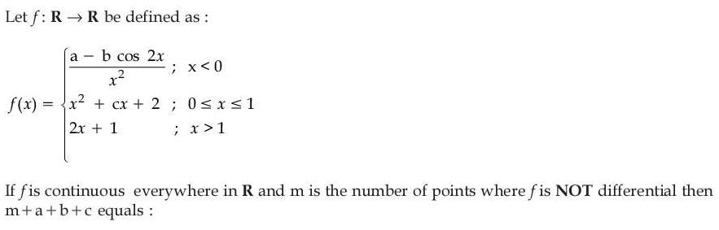
(1) 
(2) 
(3) 
(4) 
Hint 1: For x < 0 the fraction must have a finite limit at 0. What does that force a and b to satisfy?
Hint 2: a − b cos 2x must vanish at 0: a = b. Then b(1 − cos 2x)/x² → 2b, which must equal f(0) = 2.
What this tests: Continuity and differentiability of piecewise functions.
1. a = b = 1. Continuity at 1: 1 + c + 2 = 3, so c = 0.
2. At 0 both one-sided slopes are 0; at 1 both are 2. So f is differentiable everywhere: m = 0.
3. m + a + b + c = 2.
Answer: (2)
If this felt hard: Revise 'Continuity and Differentiability'.
Claude’s answer: 2 · NTA final key: 2 · agrees · Answer recomputed with SymPy (tools/verify_pyq_solutions.py)
Q9 · Mathematics · MCQ · ID 9561771044
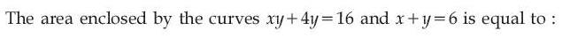
Hint 1: Write the first curve as y = 16/(x + 4) and find where it meets the line.
Hint 2: 16/(x + 4) = 6 − x gives x² − 2x − 8 = 0: x = −2 and 4.
What this tests: Area between a hyperbola and a line.
1. Area = ∫−24 (6 − x) dx − ∫−24 16/(x + 4) dx.
2. = 30 − 16 ln(8/2) = 30 − 32 loge2.
Answer: (2)
If this felt hard: Revise 'Application of Integrals'.
Claude’s answer: 2 · NTA final key: 2 · agrees · Answer recomputed with SymPy (tools/verify_pyq_solutions.py)
Q10 · Mathematics · MCQ · ID 9561771045
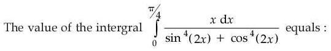
Hint 1: Use x → π/4 − x. What happens to sin⁴(2x) + cos⁴(2x)?
Hint 2: The denominator is unchanged, so I = (π/8)∫0π/4 dx/(sin⁴2x + cos⁴2x). Then divide top and bottom by cos⁴2x and put t = tan 2x.
What this tests: Definite integrals with the king property.
1. ∫0π/4 dx/(sin⁴2x + cos⁴2x) = (1/2)∫0∞ (1 + t²)/(1 + t⁴) dt = (1/2)(π/√2) = π/(2√2).
2. I = (π/8)(π/(2√2)) = π²/(16√2) = √2π²/32.
Answer: (2)
If this felt hard: Revise 'Integrals' (properties of definite integrals; ∫(1 + t²)/(1 + t⁴)).
Claude’s answer: 2 · NTA final key: 2 · agrees · Answer recomputed with SymPy (tools/verify_pyq_solutions.py)
Q11 · Mathematics · MCQ · ID 9561771046
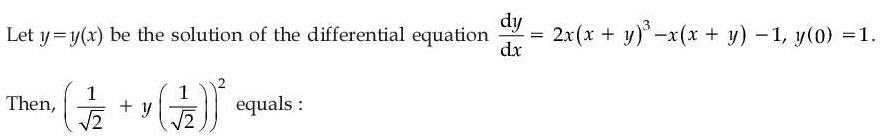
Hint 1: Put u = x + y. Then du/dx = 1 + dy/dx.
Hint 2: du/dx = 2xu³ − xu: a Bernoulli equation. Put w = 1/u².
What this tests: Differential equations by substitution (Bernoulli).
1. dw/dx = −2u−3du/dx = −4x + 2xw, so dw/dx − 2xw = −4x, giving w = 2 + Cex².
2. u(0) = 1 gives C = −1: (x + y)² = 1/(2 − ex²).
3. At x = 1/√2: 1/(2 − √e).
Answer: (1)
If this felt hard: Revise 'Differential Equations'.
Claude’s answer: 1 · NTA final key: 1 · agrees · Answer recomputed with SymPy (tools/verify_pyq_solutions.py)
Q12 · Mathematics · MCQ · ID 9561771047
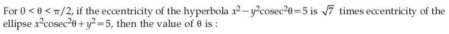
(2) 
(3) 
Hint 1: Put both conics in standard form and write each eccentricity in terms of sin θ.
Hint 2: Hyperbola x²/5 − y²/(5 sin²θ) = 1: e² = 1 + sin²θ. Ellipse x²/(5 sin²θ) + y²/5 = 1: e² = 1 − sin²θ.
What this tests: Eccentricity of ellipse and hyperbola.
1. 1 + sin²θ = 7(1 − sin²θ), so sin²θ = 3/4.
2. θ = π/3.
Answer: (2)
If this felt hard: Revise 'Conic Sections'.
Claude’s answer: 2 · NTA final key: 2 · agrees · Answer recomputed with SymPy (tools/verify_pyq_solutions.py)
Q13 · Mathematics · MCQ · ID 9561771048
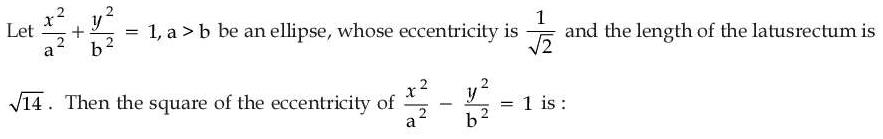
(2) 
Hint 1: e² = 1/2 links b² to a². The latus rectum then gives a.
Hint 2: b² = a²(1 − e²) = a²/2. Latus rectum 2b²/a = a.
What this tests: Ellipse and hyperbola with the same a, b.
1. The hyperbola x²/a² − y²/b² = 1 has e² = 1 + b²/a² = 3/2 (a is not even needed).
Answer: (1)
If this felt hard: Revise 'Conic Sections'.
Claude’s answer: 1 · NTA final key: 1 · agrees · Answer recomputed with SymPy (tools/verify_pyq_solutions.py)
Q14 · Mathematics · MCQ · ID 9561771049
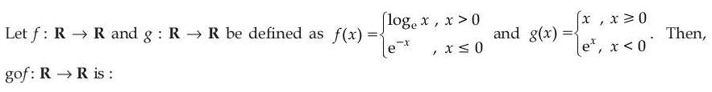
(2)
(3) 
(4) 
Hint 1: Work out g(f(x)) on the three ranges x ≤ 0, 0 < x < 1 and x ≥ 1.
Hint 2: x ≤ 0: f = e−x ≥ 1, so gof = e−x. 0 < x < 1: f = ln x < 0, so gof = eln x = x. x ≥ 1: gof = ln x.
What this tests: Composite functions: one-one and onto.
1. Values: [1, ∞) for x ≤ 0, (0, 1) for 0 < x < 1, [0, ∞) for x ≥ 1. Negative numbers are never reached: not onto.
2. gof(−ln 2) = 2 = gof(e²): not one-one.
Answer: (4)
If this felt hard: Revise 'Relations and Functions'.
Claude’s answer: 4 · NTA final key: 4 · agrees · Answer recomputed with SymPy (tools/verify_pyq_solutions.py)
Q15 · Mathematics · MCQ · ID 9561771050
(1)
(2)
(3)
(4)
Hint 1: Two circles cut at two points when |r1 − r2| < d < r1 + r2.
Hint 2: C: centre (0, 0), r = 2. C': centre (2λ, 0), r' = √(4λ² − 9). d = 2|λ|.
What this tests: Intersection of two circles.
1. d < 2 + r' gives (2|λ| − 2)² < 4λ² − 9, i.e. |λ| > 13/8. (The other inequality always holds then.)
2. So the set is R − [−13/8, 13/8]: a = −13/8, b = 13/8.
3. Point (−1, 6): 6(1) + 36 = 42, so it lies on 6x² + y² = 42.
Answer: (2)
If this felt hard: Revise 'Conic Sections' (circle).
Claude’s answer: 2 · NTA final key: 2 · agrees · Answer recomputed with SymPy (tools/verify_pyq_solutions.py)
Q16 · Mathematics · MCQ · ID 9561771051
(1)
(2) 
(3)
(4)
Hint 1: SD = |(B − A)·(d1 × d2)|/|d1 × d2|. Set it equal to 1.
Hint 2: d1 × d2 = (−2, 1, 1) × (1, −2, 1) = (3, 3, 3). B − A = (√3 − λ, −1, 1).
What this tests: Shortest distance between skew lines.
1. SD = |3(√3 − λ)|/(3√3) = |√3 − λ|/√3 = 1.
2. λ = 0 or 2√3; sum = 2√3.
Answer: (4)
If this felt hard: Revise 'Three Dimensional Geometry'.
Claude’s answer: 4 · NTA final key: 4 · agrees · Answer recomputed with SymPy (tools/verify_pyq_solutions.py)
Q17 · Mathematics · MCQ · ID 9561771052
(1)
(2)
(3)
(4)
Hint 1: Use Bayes' theorem over the possible numbers of white balls, taking all compositions as equally likely.
Hint 2: P(2W, 2B | k white) = C(k, 2)C(8 − k, 2)/C(8, 4). Only k = 2 to 6 give a non-zero value.
What this tests: Bayes' theorem.
1. Numerators: k = 2: 15, 3: 30, 4: 36, 5: 30, 6: 15; total 126.
2. P(k = 4 | 2W2B) = 36/126 = 2/7.
Answer: (4)
If this felt hard: Revise 'Probability'.
Claude’s answer: 4 · NTA final key: 4 · agrees · Answer recomputed with SymPy (tools/verify_pyq_solutions.py)
Note: Assumes every number of white balls (0 to 8) is equally likely beforehand, as is standard for this problem.
Q18 · Mathematics · MCQ · ID 9561771053
(1)
(2) 
(3)
(4) 
Hint 1: The median is 170, so it must be the middle value. Use the mean deviation about 170 to find a and b.
Hint 2: Known deviations from 170: 0, 45, 60, 20, 40 (sum 165). So |a − 170| + |b − 170| = 205 − 165 = 40, with one of a, b ≤ 170 and the other ≥ 170.
What this tests: Median and mean deviation.
1. The values that fit the options are a = 130, b = 170 (deviations 40 and 0).
2. Mean = (170 + 125 + 230 + 190 + 210 + 130 + 170)/7 = 175.
3. Deviations from 175: 5, 50, 55, 15, 35, 45, 5: sum 210. Mean deviation = 210/7 = 30.
Answer: (2)
If this felt hard: Revise 'Statistics'.
Claude’s answer: 2 · NTA final key: 2 · agrees · Answer recomputed with SymPy (tools/verify_pyq_solutions.py)
Note: Other splits of the deviation 40 (e.g. a = 150, b = 190) change the median; a = 130, b = 170 keeps it at 170 and matches the key.
Q19 · Mathematics · MCQ · ID 9561771054
(1)
(2)
(3)
(4)
Hint 1: Work out a × b first. Then cross with î three times, one step at a time.
Hint 2: a × b = (2, −23, −11). Crossing with î kills the î part and rotates the rest: (0, y, z) × î = (0, z, −y).
What this tests: Repeated cross products.
1. (2, −23, −11) × î = (0, −11, 23); × î = (0, 23, 11); × î = (0, 11, −23).
2. c·(−1, 1, 1) = 11 − 23 = −12.
Answer: (2)
If this felt hard: Revise 'Vector Algebra'.
Claude’s answer: 2 · NTA final key: 2 · agrees · Answer recomputed with SymPy (tools/verify_pyq_solutions.py)
Q20 · Mathematics · MCQ · ID 9561771055
(1)
(2)
(3)
(4)
Hint 1: Find tan(A + B) with the addition formula and compare it with tan C.
Hint 2: tan A + tan B = (1 + x)/√(x(x² + x + 1)); 1 − tan A tan B = 1 − 1/(x² + x + 1) = (x² + x)/(x² + x + 1).
What this tests: Tangent addition formula.
1. tan(A + B) = √(x² + x + 1)/(x√x) = √((x² + x + 1)/x³).
2. tan C = √(x−3 + x−2 + x−1) = √((1 + x + x²)/x³): the same.
3. Both angles are acute... A + B is in (0, π) and tan(A + B) > 0, so A + B = C.
Answer: (1)
If this felt hard: Revise 'Trigonometric Functions'.
Claude’s answer: 1 · NTA final key: 1 · agrees · Answer recomputed with SymPy (tools/verify_pyq_solutions.py)
Q21 · Mathematics · Numerical · ID 9561771056
Hint 1: R1: a divides b. R2: b divides a. Which pairs are in R1 but not in R2?
Hint 2: Both hold only when a = b. So R1 − R2 = pairs with a | b and a ≠ b.
What this tests: Relations defined by divisibility.
1. For each a, the multiples of a up to 20 other than a itself: ⌊20/a⌋ − 1.
2. Sum over a = 1 to 20: 19 + 9 + 5 + 4 + 3 + 2 + 1 + 1 + 1 + 1 + 0 + … = 46.
Answer: 46
If this felt hard: Revise 'Relations and Functions'.
Claude’s answer: 46 · NTA final key: 46 · agrees · Answer recomputed with SymPy (tools/verify_pyq_solutions.py)
Q22 · Mathematics · Numerical · ID 9561771057
Hint 1: P is a disc. Write Q with z = x + iy: it becomes a half-plane. Then look for the points of the region farthest from and nearest to 3 − 2i.
Hint 2: Q: 2x − 2y ≤ −8, i.e. y ≥ x + 4. P: centre (−2, 3), radius 1. The point 3 − 2i lies along the direction (1, −1) from the centre.
What this tests: Extreme distances over a region in the complex plane.
1. Farthest: centre − (1/√2)(1, −1) = (−2 − 1/√2, 3 + 1/√2), inside Q. |z1|² = 14 + 5√2.
2. Nearest: the matching point on the circle is outside Q, so use the line y = x + 4: the foot of (3, −2) on it is (−3/2, 5/2), inside the disc. |z2|² = 17/2.
3. |z1|² + 2|z2|² = 31 + 5√2: α + β = 36.
Answer: 36
If this felt hard: Revise 'Complex Numbers' (loci) and 'Straight Lines'.
Claude’s answer: 36 · NTA final key: 36 · agrees · Answer recomputed with SymPy (tools/verify_pyq_solutions.py)
Q23 · Mathematics · Numerical · ID 9561771058
Hint 1: Write (1 + 1/x)⁶ = (x + 1)⁶/x⁶. You then need the coefficient of x36 in a polynomial.
Hint 2: α = coefficient of x36 in (1 + x)⁶(1 + x²)⁷(1 − x³)⁸. The highest power is 6 + 14 + 24 = 44, so work from the top.
What this tests: Coefficient in a product of binomials.
1. Expand and collect the x36 terms (a long but direct count).
2. The coefficient is −678, so |α| = 678.
Answer: 678
If this felt hard: Revise 'Binomial Theorem'.
Claude’s answer: 678 · NTA final key: 678 · agrees · Answer recomputed with SymPy (tools/verify_pyq_solutions.py)
Q24 · Mathematics · Numerical · ID 9561771059
Hint 1: Fix z, then count the (x, y) pairs.
Hint 2: For a fixed z, x = 42 − 3z − 2y ≥ 0 allows y = 0, …, ⌊(42 − 3z)/2⌋.
What this tests: Counting non-negative integer solutions.
1. z = 0 to 14: counts ⌊(42 − 3z)/2⌋ + 1 = 22, 20, 19, 17, 16, 14, 13, 11, 10, 8, 7, 5, 4, 2, 1.
2. Total = 169.
Answer: 169
If this felt hard: Revise 'Permutations and Combinations'.
Claude’s answer: 169 · NTA final key: 169 · agrees · Answer recomputed with SymPy (tools/verify_pyq_solutions.py)
Q25 · Mathematics · Numerical · ID 9561771060
Hint 1: Find the first common term and the common difference of the common terms.
Hint 2: First AP: 3 + 4k (up to 403). Second: 2 + 3k (up to 404). Common terms: 11, 23, 35, … with difference 12.
What this tests: Common terms of two APs.
1. Last common term ≤ 403: 11 + 12 × 32 = 395, so 33 terms.
2. Sum = 33 × (11 + 395)/2 = 6699.
Answer: 6699
If this felt hard: Revise 'Sequences and Series'.
Claude’s answer: 6699 · NTA final key: 6699 · agrees · Answer recomputed with SymPy (tools/verify_pyq_solutions.py)
Q26 · Mathematics · Numerical · ID 9561771061
Hint 1: Near 0 from the left, {x} → 1; from the right, {x} → 0. Treat the two sides separately.
Hint 2: Left: put h = 1 − {x} → 0: cos−1(1 − {x}²) → π/2, sin−1(h) ≈ h, denominator {x}(1 − {x})(1 + {x}) ≈ 2h. Right: cos−1(1 − x²) ≈ √2 x and sin−1(1) = π/2.
What this tests: One-sided limits with the fractional part function.
1. L = (π/2)h/(2h) = π/4.
2. R = √2 x (π/2)/x = π/√2.
3. (32/π²)(π²/16 + π²/2) = 2 + 16 = 18.
Answer: 18
If this felt hard: Revise 'Limits and Derivatives'. cos−1(1 − t²) ≈ √2 t for small t.
Claude’s answer: 18 · NTA final key: 18 · agrees · Answer recomputed with SymPy (tools/verify_pyq_solutions.py)
Q27 · Mathematics · Numerical · ID 9561771062
Hint 1: Add the integral to itself with x → −x. What does 1/(1 + esin x) + 1/(1 + e−sin x) equal?
Hint 2: The sum is 1, so I = ∫0π/2 8√2 cos x/(1 + sin⁴x) dx. Put t = sin x.
What this tests: Definite integrals with the king property; ∫ dt/(1 + t⁴).
1. I = 8√2∫01 dt/(1 + t⁴).
2. ∫01 dt/(1 + t⁴) = (π + 2 ln(1 + √2))/(4√2), and 2 ln(1 + √2) = ln(3 + 2√2).
3. I = 2π + 2 loge(3 + 2√2): α = β = 2, α² + β² = 8.
Answer: 8
If this felt hard: Revise 'Integrals'.
Claude’s answer: 8 · NTA final key: 8 · agrees · Answer recomputed with SymPy (tools/verify_pyq_solutions.py)
Q28 · Mathematics · Numerical · ID 9561771063
Hint 1: Write it as dx/dt − 2x/(t + 1) = (t + 1)³: a linear equation.
Hint 2: Integrating factor 1/(t + 1)². Then (x/(t + 1)²)' = t + 1.
What this tests: Linear differential equation.
1. x/(t + 1)² = (t + 1)²/2 + C. x(0) = 2 gives C = 3/2.
2. x(1) = 4(2 + 3/2) = 14.
Answer: 14
If this felt hard: Revise 'Differential Equations'.
Claude’s answer: 14 · NTA final key: 14 · agrees · Answer recomputed with SymPy (tools/verify_pyq_solutions.py)
Q29 · Mathematics · Numerical · ID 9561771064
Hint 1: Find P first (first-quadrant intersection), which gives α. Then a circle centred (0, k) touches L when its distance from L equals the radius.
Hint 2: x² + 2y = 3 and x² = 2y give y = 1, x = √2, so α = 3. Distance from (0, k) to √2x + y − 3 = 0 is |k − 3|/√3.
What this tests: Circle and parabola intersection; tangent circles.
1. |k − 3|/√3 = 2√3 gives k = 9 or −3: Q1Q2 = 12 along the y-axis.
2. The height of P from the y-axis is √2. Area = (1/2)(12)(√2) = 6√2.
3. Area² = 72.
Answer: 72
If this felt hard: Revise 'Conic Sections' (circle) and 'Straight Lines'.
Claude’s answer: 72 · NTA final key: 72 · agrees · Answer recomputed with SymPy (tools/verify_pyq_solutions.py)
Q30 · Mathematics · Numerical · ID 9561771065
Hint 1: PQ is perpendicular to both lines. Write P and Q with their parameters and impose two dot-product conditions.
Hint 2: P = (1 + λ, 2 − λ, 3 + λ), Q = (4 + μ, 5 + μ, 6 − μ). (P − Q)·(1, −1, 1) = 0 and (P − Q)·(1, 1, −1) = 0.
What this tests: Line of shortest distance between skew lines.
1. λ = 3/2, μ = −3/2: P = (5/2, 1/2, 9/2), Q = (5/2, 7/2, 15/2).
2. Midpoint (5/2, 2, 6), so 2(α + β + γ) = 2 × 21/2 = 21.
Answer: 21
If this felt hard: Revise 'Three Dimensional Geometry'.
Claude’s answer: 21 · NTA final key: 21 · agrees · Answer recomputed with SymPy (tools/verify_pyq_solutions.py)
Q31 · Physics · MCQ · ID 9561771066
(1)
(2)
(3)
(4)
Hint 1: Angular impulse = torque × time = change in angular momentum.
Hint 2: [τ] = ML²T−2, multiplied by T.
What this tests: Dimensional formulae.
1. [Angular impulse] = ML²T−1.
Answer: (4)
If this felt hard: Revise 'Units and Measurements'.
Claude’s answer: 4 · NTA final key: 4 · agrees · Answer recomputed with SymPy (tools/verify_pyq_solutions.py)
Q32 · Physics · MCQ · ID 9561771067
(1)
(2)
(3)
(4)
Hint 1: Find the speed from the circular motion: v = 2πR/T. Then use H = v² sin²θ/(2g).
Hint 2: v² sin²θ/(2g) = 4R.
What this tests: Uniform circular motion; projectile height.
1. sin²θ = 8gR/v² = 8gRT²/(4π²R²) = 2gT²/(π²R).
2. θ = sin−1√(2gT²/(π²R)).
Answer: (2)
If this felt hard: Revise 'Motion in a Plane'.
Claude’s answer: 2 · NTA final key: 2 · agrees · Answer recomputed with SymPy (tools/verify_pyq_solutions.py)
Q33 · Physics · MCQ · ID 9561771068
(1) 
(2)
(3) 
(4) 
Hint 1: Treat the trolley and the hanging block as one system. Which forces drive it and which oppose it?
Hint 2: Driving force = weight of the 6 kg block (60 N). Friction on the trolley = 0.04 × 200 = 8 N.
What this tests: Connected bodies with friction.
1. a = (60 − 8)/(20 + 6) = 2 m/s².
Answer: (4)
If this felt hard: Revise 'Laws of Motion'.
Claude’s answer: 4 · NTA final key: 4 · agrees · Answer recomputed with SymPy (tools/verify_pyq_solutions.py)
Q34 · Physics · MCQ · ID 9561771069
(1) 
(2)
(3)
(4)
Hint 1: In a horizontal circle the tension supplies the centripetal force: T = mω²L.
Hint 2: 400 = 0.5 × ω² × 0.5.
What this tests: Circular motion and tension.
1. ω² = 1600, ω = 40 rad/s.
Answer: (2)
If this felt hard: Revise 'Laws of Motion' (circular motion).
Claude’s answer: 2 · NTA final key: 2 · agrees · Answer recomputed with SymPy (tools/verify_pyq_solutions.py)
Q35 · Physics · MCQ · ID 9561771070
(1)
(2)
(3)
(4)
Hint 1: The bullet sticks: use momentum conservation, then energy conservation for the swing.
Hint 2: v = (0.01 × 200)/(1.01). h = v²/(2g).
What this tests: Ballistic pendulum.
1. v ≈ 1.98 m/s.
2. h = 1.98²/20 ≈ 0.196 m ≈ 0.20 m.
Answer: (1)
If this felt hard: Revise 'Work, Energy and Power' (collisions).
Claude’s answer: 1 · NTA final key: 1 · agrees · Answer recomputed with SymPy (tools/verify_pyq_solutions.py)
Q36 · Physics · MCQ · ID 9561771071
(1)
(2)
(3)
(4)
Hint 1: A seconds pendulum has T = 2 s. How much is g at height 2R?
Hint 2: g' = g/(1 + 2)² = g/9 = π²/9. L = g'T²/(4π²).
What this tests: Variation of g with height; simple pendulum.
1. L = (π²/9)(4)/(4π²) = 1/9 m.
Answer: (4)
If this felt hard: Revise 'Gravitation' and 'Oscillations'.
Claude’s answer: 4 · NTA final key: 4 · agrees · Answer recomputed with SymPy (tools/verify_pyq_solutions.py)
Q37 · Physics · ID 9561771072
Left out of the bank: no answer in the final key (NTA).
Q38 · Physics · MCQ · ID 9561771073
(1)
(2)
(3)
(4)
Hint 1: This is a polytropic process PVⁿ = K with n = 3/2. Integrate P dV.
Hint 2: W = ∫P dV = (P1V1 − P2V2)/(n − 1).
What this tests: Work in a polytropic process.
1. n − 1 = 1/2, so W = 2(P1V1 − P2V2).
Answer: (3)
If this felt hard: Revise 'Thermodynamics'.
Claude’s answer: 3 · NTA final key: 3 · agrees · Answer recomputed with SymPy (tools/verify_pyq_solutions.py)
Q39 · Physics · MCQ · ID 9561771074
(1)
(2)
(3)
(4)
Hint 1: Add the heat capacities: CV,mix = Σ nCV/Σ n.
Hint 2: Monoatomic CV = (3/2)R, diatomic CV = (5/2)R.
What this tests: Specific heat of a gas mixture.
1. CV = (2 × 3/2 + 6 × 5/2)R/8 = 18R/8 = (9/4)R.
Answer: (2)
If this felt hard: Revise 'Kinetic Theory'.
Claude’s answer: 2 · NTA final key: 2 · agrees · Answer recomputed with SymPy (tools/verify_pyq_solutions.py)
Q40 · Physics · MCQ · ID 9561771075
(1)
(2)
(3)
(4)
Hint 1: Joining like ends shares the charge. Energy lost = C1C2(V1 − V2)²/(2(C1 + C2)).
Hint 2: C1 = C2 = C, V1 − V2 = V.
What this tests: Energy loss when capacitors are connected.
1. Loss = (C²/(2C))(V²)/2 = CV²/4.
Answer: (2)
If this felt hard: Revise 'Electrostatic Potential and Capacitance'.
Claude’s answer: 2 · NTA final key: 2 · agrees · Answer recomputed with SymPy (tools/verify_pyq_solutions.py)
Q41 · Physics · MCQ · ID 9561771076
(1)
(2)
(3)
(4)
Hint 1: All eight cells are in one series loop. Find the current, then the voltage across the one cell the voltmeter is connected to.
Hint 2: Total emf = 8 × 5 = 40 V, total resistance = 8 × 0.2 = 1.6 Ω. Terminal voltage of one cell = E − Ir.
What this tests: Cells in series; terminal voltage.
1. I = 40/1.6 = 25 A.
2. V = 5 − 25 × 0.2 = 0 V.
Answer: (3)
If this felt hard: Revise 'Current Electricity'.
Claude’s answer: 3 · NTA final key: 3 · agrees · Answer recomputed with SymPy (tools/verify_pyq_solutions.py)
Note: Figure reading: all cells are connected in the same sense around the loop; the voltmeter is across the single cell on the right.
Q42 · Physics · MCQ · ID 9561771077
(1)
(2)
(3)
(4)
Hint 1: A voltmeter is a galvanometer with a large resistance in series. Full-scale current flows at 100 V.
Hint 2: R + G = V/Ig.
What this tests: Galvanometer as a voltmeter.
1. R = 100/0.005 − 50 = 20000 − 50 = 19950 Ω.
Answer: (1)
If this felt hard: Revise 'Moving Charges and Magnetism'.
Claude’s answer: 1 · NTA final key: 1 · agrees · Answer recomputed with SymPy (tools/verify_pyq_solutions.py)
Q43 · Physics · MCQ · ID 9561771078
(1)
(2)
(3)
(4)
Hint 1: Resonance frequency f = 1/(2π√(LC)). What must stay constant?
Hint 2: LC must stay the same. C → 4C means L → L/4.
What this tests: Resonance in LCR circuits.
1. New inductance = L/4, i.e. reduced by 3L/4.
Answer: (4)
If this felt hard: Revise 'Alternating Current'.
Claude’s answer: 4 · NTA final key: 4 · agrees · Answer recomputed with SymPy (tools/verify_pyq_solutions.py)
Q44 · Physics · MCQ · ID 9561771079
(1)
(2)
(3)
(4)
Hint 1: In a capacitor circuit, the conduction current in the wires equals the displacement current between the plates.
Hint 2: Irms = VrmsωC.
What this tests: Displacement current.
1. I = 230 × 300 × 200 × 10−12 = 13.8 μA.
2. Both currents are 13.8 μA.
Answer: (1)
If this felt hard: Revise 'Electromagnetic Waves'.
Claude’s answer: 1 · NTA final key: 1 · agrees · Answer recomputed with SymPy (tools/verify_pyq_solutions.py)
Q45 · Physics · MCQ · ID 9561771080
(1)
(2)
(3)
(4)
Hint 1: The central maximum spans from the first minimum on one side to the first minimum on the other.
Hint 2: Width = 2λf/a.
What this tests: Single-slit diffraction.
1. Width = 2 × 6 × 10−7 × 0.2/10−5 = 0.024 m = 24 mm.
Answer: (2)
If this felt hard: Revise 'Wave Optics'.
Claude’s answer: 2 · NTA final key: 2 · agrees · Answer recomputed with SymPy (tools/verify_pyq_solutions.py)
Q46 · Physics · MCQ · ID 9561771081
(1)
(2) 
(3) 
(4)
Hint 1: de Broglie: λ = h/(mv), so v = h/(mλ). The α-particle has 4 times the proton's mass.
Hint 2: vp/vα = (mαλα)/(mpλp).
What this tests: de Broglie wavelength.
1. vp/vα = (4m × 2λ)/(m × λ) = 8.
2. Ratio 8 : 1.
Answer: (3)
If this felt hard: Revise 'Dual Nature of Radiation and Matter'.
Claude’s answer: 3 · NTA final key: 3 · agrees · Answer recomputed with SymPy (tools/verify_pyq_solutions.py)
Q47 · Physics · MCQ · ID 9561771082
(1)
(2)
(3)
(4)
Hint 1: Balmer lines end on n = 2. To emit one, the electron must first be at n = 3 or higher.
Hint 2: Minimum excitation from n = 1 to n = 3: 13.6(1 − 1/9) eV.
What this tests: Hydrogen energy levels; Balmer series.
1. E = 13.6 × 8/9 ≈ 12.1 eV.
Answer: (3)
If this felt hard: Revise 'Atoms'.
Claude’s answer: 3 · NTA final key: 3 · agrees · Answer recomputed with SymPy (tools/verify_pyq_solutions.py)
Q48 · Physics · MCQ · ID 9561771083
(1)
(2)
(3)
(4)
Hint 1: The Zener holds 5 V across RL. Find the load current and the largest current the Zener can take.
Hint 2: IL = 5 V/1 kΩ = 5 mA. IZ,max = 10 mW/5 V = 2 mA. The series current is (8 − 5)/Rs.
What this tests: Zener diode as a voltage regulator.
1. To regulate, the series current must be at least IL = 5 mA (else the Zener switches off) and at most IL + IZ,max = 7 mA.
2. So 3/0.007 ≈ 429 Ω ≤ Rs ≤ 3/0.005 = 600 Ω.
3. None of the options lies in this range; with 1 kΩ only 3 mA flows, less than the load needs, and the Zener does not conduct.
Answer: (0)
If this felt hard: Revise 'Semiconductor Electronics' (Zener regulator).
Claude’s answer: 0 · NTA final key: 2 · DISAGREES: flag for the owner · disputed
Note: DISPUTED: by the usual analysis R_{s} must be between about 429 Ω and 600 Ω, so no option is correct ('0' here means none of the options). NTA's final key is 1 kΩ. Owner/teacher to decide.
Q49 · Physics · MCQ · ID 9561771084
(1)
(2)
(3)
(4)
Hint 1: 10 MSD = 11 VSD. Least count = 1 MSD − 1 VSD.
Hint 2: 1 VSD = (10/11) MSD.
What this tests: Vernier calliper least count.
1. LC = (1 − 10/11) MSD = (1/11) × 5 = 5/11 units.
Answer: (2)
If this felt hard: Revise 'Units and Measurements'.
Claude’s answer: 2 · NTA final key: 2 · agrees · Answer recomputed with SymPy (tools/verify_pyq_solutions.py)
Q50 · Physics · MCQ · ID 9561771085
(1)
(2)
(3)
(4)
Hint 1: ρ = Rπr²/l. Add the relative errors, counting r twice.
Hint 2: Δρ/ρ = ΔR/R + 2Δr/r + Δl/l.
What this tests: Propagation of errors.
1. 10/100 + 2(0.05/0.35) + 0.2/15 = 0.1 + 0.2857 + 0.0133 = 0.399.
2. 39.9%.
Answer: (1)
If this felt hard: Revise 'Units and Measurements'.
Claude’s answer: 1 · NTA final key: 1 · agrees · Answer recomputed with SymPy (tools/verify_pyq_solutions.py)
Q51 · Physics · Numerical · ID 9561771086
Hint 1: Differentiate twice. When is the acceleration zero?
Hint 2: v = −9t² + 36t + 16, a = −18t + 36.
What this tests: Kinematics by differentiation.
1. a = 0 at t = 2 s.
2. v = −36 + 72 + 16 = 52 m/s.
Answer: 52
If this felt hard: Revise 'Motion in a Straight Line'.
Claude’s answer: 52 · NTA final key: 52 · agrees · Answer recomputed with SymPy (tools/verify_pyq_solutions.py)
Q52 · Physics · Numerical · ID 9561771087
Hint 1: Put the right angle at the origin and the other two corners on the axes.
Hint 2: Equal masses at (0, 0), (4, 0), (0, 4). The centre of mass is the average.
What this tests: Centre of mass.
1. CM = (4/3, 4/3), |r| = 4√2/3.
2. x = 3.
Answer: 3
If this felt hard: Revise 'System of Particles and Rotational Motion'.
Claude’s answer: 3 · NTA final key: 3 · agrees · Answer recomputed with SymPy (tools/verify_pyq_solutions.py)
Q53 · Physics · Numerical · ID 9561771088
Hint 1: Bernoulli: the pressure difference between the two surfaces gives the lift. Convert km/h to m/s.
Hint 2: v1 = 50 m/s, v2 = 70 m/s. ΔP = (1/2)ρ(v2² − v1²). Lift = ΔP × (total wing area 80 m²) = mg.
What this tests: Bernoulli's principle (dynamic lift).
1. ΔP = 0.5 × (4900 − 2500) = 1200 Pa.
2. Lift = 1200 × 80 = 96000 N, so m = 9600 kg.
Answer: 9600
If this felt hard: Revise 'Mechanical Properties of Fluids'.
Claude’s answer: 9600 · NTA final key: 9600 · agrees · Answer recomputed with SymPy (tools/verify_pyq_solutions.py)
Q54 · Physics · Numerical · ID 9561771089
Hint 1: Frequency of a stretched wire ∝ √T. What happens when T goes from 6 N to 54 N?
Hint 2: f ∝ √T, so the wire's frequency triples.
What this tests: Sonometer; beats.
1. First it equals the fork: f. Then it becomes 3f.
2. Beats 3f − f = 12, so f = 6 Hz.
Answer: 6
If this felt hard: Revise 'Waves'.
Claude’s answer: 6 · NTA final key: 6 · agrees · Answer recomputed with SymPy (tools/verify_pyq_solutions.py)
Q55 · Physics · Numerical · ID 9561771090
Hint 1: The angle is unchanged, so (electric force)/(effective weight) is unchanged.
Hint 2: In water: force ÷ K, weight replaced by mg(1 − σ/ρ).
What this tests: Charged spheres in a dielectric with buoyancy.
1. K(1 − 1/1.5) = 1, so K × 1/3 = 1.
2. K = 3.
Answer: 3
If this felt hard: Revise 'Electric Charges and Fields'.
Claude’s answer: 3 · NTA final key: 3 · agrees · Answer recomputed with SymPy (tools/verify_pyq_solutions.py)
Q56 · Physics · Numerical · ID 9561771091
Hint 1: Charge = ∫ I dt.
Hint 2: ∫12 (3t² + 4t³) dt = [t³ + t⁴] from 1 to 2.
What this tests: Current as rate of flow of charge.
1. (8 + 16) − (1 + 1) = 22 C.
Answer: 22
If this felt hard: Revise 'Current Electricity'.
Claude’s answer: 22 · NTA final key: 22 · agrees · Answer recomputed with SymPy (tools/verify_pyq_solutions.py)
Q57 · Physics · Numerical · ID 9561771092
Hint 1: Each side of the hexagon is a finite straight wire. Find the distance from the centre to a side.
Hint 2: Side a = 4π/6 = 2π/3; distance d = a√3/2 = π/√3. One side: B = (μ0I/4πd)(sin 30° + sin 30°).
What this tests: Biot–Savart law for a polygon.
1. One side: 10−7 × 4π√3/(π/√3) × 1 = 12 × 10−7 T.
2. Six sides: 72 × 10−7 T.
Answer: 72
If this felt hard: Revise 'Moving Charges and Magnetism'.
Claude’s answer: 72 · NTA final key: 72 · agrees · Answer recomputed with SymPy (tools/verify_pyq_solutions.py)
Q58 · Physics · Numerical · ID 9561771093
Hint 1: The flux changes for two reasons: the loop moves into weaker field, and the field itself decreases. Do both effects add?
Hint 2: dB/dx = −0.1 T/m (B grows towards −x). Motional part: |dB/dx| × v × A. Time part: |dB/dt| × A. A = 0.12 × 0.05 = 0.006 m².
What this tests: Induced emf in a non-uniform, time-varying field.
1. Motion: 0.1 × 0.05 × 0.006 = 3 × 10−5 V. Time: 10−3 × 0.006 = 6 × 10−6 V. Both reduce the flux, so emf = 3.6 × 10−5 V.
2. P = emf²/R = 1.296 × 10−9/0.006 = 2.16 × 10−7 W = 216 × 10−9 W.
Answer: 216
If this felt hard: Revise 'Electromagnetic Induction'.
Claude’s answer: 216 · NTA final key: 216 · agrees · Answer recomputed with SymPy (tools/verify_pyq_solutions.py)
Q59 · Physics · Numerical · ID 9561771094
Hint 1: A virtual image by a convex lens is on the same side as the object, three times as far.
Hint 2: |v| = 3|u| and |v| − |u| = 20 cm. Use 1/f = 1/v − 1/u with signs.
What this tests: Lens formula (virtual image).
1. |u| = 10 cm, |v| = 30 cm: u = −10, v = −30.
2. 1/f = −1/30 + 1/10 = 1/15, so f = 15 cm.
Answer: 15
If this felt hard: Revise 'Ray Optics and Optical Instruments'.
Claude’s answer: 15 · NTA final key: 15 · agrees · Answer recomputed with SymPy (tools/verify_pyq_solutions.py)
Q60 · Physics · Numerical · ID 9561771095
Hint 1: R ∝ A1/3, so A ∝ R³.
Hint 2: A = 64 × (4/4.8)³.
What this tests: Nuclear radius.
1. (4/4.8)³ = (5/6)³ = 125/216.
2. A = 64 × 125/216 = 1000/27, so x = 27.
Answer: 27
If this felt hard: Revise 'Nuclei'.
Claude’s answer: 27 · NTA final key: 27 · agrees · Answer recomputed with SymPy (tools/verify_pyq_solutions.py)
Q61 · Chemistry · MCQ · ID 9561771096
(1)
(2)
(3)
(4)
Hint 1: λ = h/p. What shape is a graph of λ against p? And against 1/p?
Hint 2: λ ∝ 1/p: a rectangular hyperbola against p, a straight line through the origin against 1/p.
What this tests: de Broglie relation.
1. The first graph (λ falling as a hyperbola against p) is right.
2. The third would need a straight line against 1/p; the second and fourth show λ ∝ p.
Answer: (1)
If this felt hard: Revise 'Structure of Atom' (dual behaviour).
Claude’s answer: 1 · NTA final key: 1 · agrees · Theory question: not computable, needs a teacher’s review
Q62 · Chemistry · MCQ · ID 9561771097
(1)
(2)
(3)
(4)
Hint 1: Ionic character grows with the electronegativity difference between bonded atoms.
Hint 2: N2: 0. LiF and K2O: large (metal + non-metal). SO2 and ClF3 are in between.
What this tests: Ionic character and electronegativity difference.
1. N2 has no polarity; LiF is the most ionic (F most electronegative, Li a metal), then K2O.
2. NTA's order: N2 < SO2 < ClF3 < K2O < LiF.
Answer: (1)
If this felt hard: Revise 'Chemical Bonding and Molecular Structure'.
Claude’s answer: 1 · NTA final key: 1 · agrees · Theory question: not computable, needs a teacher’s review
Note: SO_{2} vs ClF_{3} depends on the electronegativity scale: Pauling values give 0.86 (S–O) vs 0.82 (Cl–F), rounded values give 1.0 for both. NTA's key puts ClF_{3} above SO_{2}. Worth a teacher look.
Q63 · Chemistry · MCQ · ID 9561771098
(1)
(2)
(3)
(4)
Hint 1: In free expansion the gas expands into vacuum. Is there any work? Any heat? What happens to an ideal gas's U?
Hint 2: pext = 0 so w = 0; adiabatic so q = 0; ΔU = 0, and for an ideal gas U depends only on T.
What this tests: Free expansion of an ideal gas.
1. q = 0, w = 0, ΔU = 0, so ΔT = 0.
Answer: (3)
If this felt hard: Revise 'Thermodynamics' (Chemistry).
Claude’s answer: 3 · NTA final key: 3 · agrees · Theory question: not computable, needs a teacher’s review
Q64 · Chemistry · MCQ · ID 9561771099
(1)
(2)
(3)
(4)
Hint 1: How does the degree of dissociation (and so i) change on dilution?
Hint 2: More dilute solutions have less interionic attraction, so the effective i approaches 2.
What this tests: van 't Hoff factor and dilution.
1. i increases as concentration falls: iA < iB < iC.
Answer: (1)
If this felt hard: Revise 'Solutions'.
Claude’s answer: 1 · NTA final key: 1 · agrees · Theory question: not computable, needs a teacher’s review
Q65 · Chemistry · MCQ · ID 9561771100
(1)
(2)
(3)
(4)
Hint 1: F⁻, Ne and Na⁺ all have 10 electrons. What differs between them?
Hint 2: Their nuclear charges are 9, 10 and 11.
What this tests: Size of isoelectronic species.
1. Higher nuclear charge pulls the same electron cloud closer: F⁻ > Ne > Na⁺ in size.
2. The size is affected by nuclear charge.
Answer: (2)
If this felt hard: Revise 'Classification of Elements and Periodicity in Properties'.
Claude’s answer: 2 · NTA final key: 2 · agrees · Theory question: not computable, needs a teacher’s review
Q66 · Chemistry · MCQ · ID 9561771101
(1) 
(2)
(3)
(4) 
Hint 1: Which hydride can form hydrogen bonds: NH3 or PH3? Does R have that the right way round?
Hint 2: N is small and very electronegative, so NH3 forms hydrogen bonds; PH3 has only van der Waals forces.
What this tests: Hydrogen bonding and boiling points.
1. A is correct: PH3 boils lower than NH3.
2. R swaps the two: it is not correct.
Answer: (3)
If this felt hard: Revise 'p-Block Elements' (group 15) and 'Chemical Bonding'.
Claude’s answer: 3 · NTA final key: 3 · agrees · Theory question: not computable, needs a teacher’s review
Q67 · Chemistry · MCQ · ID 9561771102
(1)
(2)
(3)
(4)
Hint 1: Cr goes from +6 to +3. Balance electrons, then O with H2O and H with H⁺.
Hint 2: Cr2O7²⁻ + 14H⁺ + 6e⁻ → 2Cr³⁺ + 7H2O.
What this tests: Balancing a half-reaction.
1. X = 14, Y = 6, Z = 7, A = Cr³⁺.
Answer: (3)
If this felt hard: Revise 'Redox Reactions'.
Claude’s answer: 3 · NTA final key: 3 · agrees · Theory question: not computable, needs a teacher’s review
Q68 · Chemistry · MCQ · ID 9561771103
(1)
(2)
(3)
(4)
Hint 1: In disproportionation, one element in one oxidation state goes both up and down. Check each reaction.
Hint 2: A: Cu(+1) → Cu(+2) and Cu(0). B: Mn(+6) → Mn(+7) and Mn(+4). C: Mn and O change separately (decomposition). D: Mn(+7) and Mn(+2) meet at Mn(+4) (the reverse: comproportionation).
What this tests: Disproportionation versus comproportionation.
1. A and B are disproportionation reactions.
Answer: (1)
If this felt hard: Revise 'Redox Reactions'.
Claude’s answer: 1 · NTA final key: 1 · agrees · Theory question: not computable, needs a teacher’s review
Q69 · Chemistry · MCQ · ID 9561771104
(1) 
(2) 
(3) 
(4) 
Hint 1: Colour needs d–d transitions. Count unpaired/possible transitions in each nickel complex.
Hint 2: [Ni(H2O)6]²⁺: Ni²⁺ d⁸ octahedral, green. [Ni(CN)4]²⁻: square planar, low spin d⁸.
What this tests: Colour of complexes.
1. Statement I: correct (green).
2. Statement II: NTA takes [Ni(CN)4]²⁻ solutions as colourless: correct.
Answer: (1)
If this felt hard: Revise 'Coordination Compounds'.
Claude’s answer: 1 · NTA final key: 1 · agrees · Theory question: not computable, needs a teacher’s review
Note: [Ni(CN)_{4}]²⁻ is usually described as pale yellow; NTA's key treats it as colourless. Worth a teacher look.
Q70 · Chemistry · MCQ · ID 9561771105
(1)
(2)
(3)
(4)
Hint 1: Homoleptic means only one kind of ligand.
Hint 2: The first three have two kinds of ligand (NH3 and Cl⁻).
What this tests: Homoleptic and heteroleptic complexes.
1. [Ni(CN)4]²⁻ has only CN⁻: homoleptic.
Answer: (4)
If this felt hard: Revise 'Coordination Compounds'.
Claude’s answer: 4 · NTA final key: 4 · agrees · Theory question: not computable, needs a teacher’s review
Q71 · Chemistry · MCQ · ID 9561771106
(1)
(2)
(3)
(4)
Hint 1: In Kjeldahl's method the compound is digested with conc. H2SO4. What is CuSO4 added for?
Hint 2: CuSO4 (with K2SO4) speeds up the digestion.
What this tests: Kjeldahl's method.
1. It is a catalyst.
Answer: (3)
If this felt hard: Revise 'Organic Chemistry: Some Basic Principles and Techniques' (estimation of nitrogen).
Claude’s answer: 3 · NTA final key: 3 · agrees · Theory question: not computable, needs a teacher’s review
Q72 · Chemistry · MCQ · ID 9561771107
(1) 
(2) 
(3) 
(4) 
Hint 1: What is the IUPAC name of aniline?
Hint 2: Aniline is C6H5NH2, called aminobenzene (IUPAC: benzenamine).
What this tests: Nomenclature of amines.
1. They are the same compound: Statement I is correct, Statement II incorrect.
Answer: (3)
If this felt hard: Revise 'Amines'.
Claude’s answer: 3 · NTA final key: 3 · agrees · Theory question: not computable, needs a teacher’s review
Q73 · Chemistry · MCQ · ID 9561771108
(1)
(2)
(3)
(4)
Hint 1: Ionic reactions involve ions. How does a bond break to give ions?
Hint 2: Heterolytic cleavage gives a cation and an anion; homolytic cleavage gives free radicals.
What this tests: Bond cleavage and reaction types.
1. Ionic reactions proceed through heterolytic bond cleavage: B only.
Answer: (2)
If this felt hard: Revise 'Organic Chemistry: Some Basic Principles and Techniques'.
Claude’s answer: 2 · NTA final key: 2 · agrees · Theory question: not computable, needs a teacher’s review
Q74 · Chemistry · MCQ · ID 9561771109
(1) 
(2) 
(3) 
(4) 
Hint 1: Which atom of CN⁻ attacks in each case? Is AgCN really ionic?
Hint 2: KCN is ionic: free CN⁻ attacks through C (alkyl cyanide). AgCN is mainly covalent: the N end attacks (isocyanide).
What this tests: Cyanides and isocyanides from haloalkanes.
1. A is correct.
2. R is wrong: AgCN is mainly covalent.
Answer: (3)
If this felt hard: Revise 'Haloalkanes and Haloarenes'.
Claude’s answer: 3 · NTA final key: 3 · agrees · Theory question: not computable, needs a teacher’s review
Q75 · Chemistry · MCQ · ID 9561771110
(1)
(2)
(3)
(4)
Hint 1: Cl2 with light substitutes the side-chain H atoms. Which product hydrolyses to an aldehyde?
Hint 2: Side-chain chlorination of toluene can give C6H5CHCl2 (benzal chloride). Hydrolysis of a gem-dichloride gives a carbonyl compound.
What this tests: Side-chain chlorination; hydrolysis of benzal chloride.
1. A = C6H5CHCl2.
2. B = C6H5CHO (benzaldehyde).
Answer: (3)
If this felt hard: Revise 'Aldehydes, Ketones and Carboxylic Acids' (preparation of aldehydes).
Claude’s answer: 3 · NTA final key: 3 · agrees · Theory question: not computable, needs a teacher’s review
Q76 · Chemistry · MCQ · ID 9561771111
(1) 
(2) 
(3) 
(4) 
Hint 1: Match each change to its reagent: ester → aldehyde, C=O → CH2, aldehyde → secondary alcohol with one more C, selective ketone reduction.
Hint 2: DIBAL-H reduces esters to aldehydes. Clemmensen (Zn(Hg)/HCl) gives CH2. CH3MgBr adds a methyl. NaBH4 reduces the ketone, not the ester.
What this tests: Reducing agents and Grignard reagents.
1. A–IV, B–II, C–I, D–III.
Answer: (2)
If this felt hard: Revise 'Aldehydes, Ketones and Carboxylic Acids'.
Claude’s answer: 2 · NTA final key: 2 · agrees · Theory question: not computable, needs a teacher’s review
Q77 · Chemistry · MCQ · ID 9561771112
(1) 
(2) 
(3) 
(4) 
Hint 1: Statement I: does the –NH2 lone pair push electrons into the ring? Statement II: what happens to aniline with AlCl3?
Hint 2: –NH2 is strongly activating (+R) and o/p directing. With AlCl3, aniline forms a salt and the ring is deactivated.
What this tests: Reactivity of aniline.
1. Both statements are correct.
Answer: (1)
If this felt hard: Revise 'Amines'.
Claude’s answer: 1 · NTA final key: 1 · agrees · Theory question: not computable, needs a teacher’s review
Q78 · Chemistry · MCQ · ID 9561771113
(1)
(2)
(3)
(4)
Hint 1: Which substituent makes the ring most electron-rich?
Hint 2: –OH is strongly activating (+R). –CH3 activates less; –Cl deactivates.
What this tests: Activating groups in electrophilic substitution.
1. Phenol is attacked most easily.
Answer: (3)
If this felt hard: Revise 'Alcohols, Phenols and Ethers' and 'Hydrocarbons'.
Claude’s answer: 3 · NTA final key: 3 · agrees · Theory question: not computable, needs a teacher’s review
Q79 · Chemistry · MCQ · ID 9561771114
(1)
(2)
(3)
(4)
Hint 1: In DNA, A pairs with T and G pairs with C.
Hint 2: Write the complement base by base.
What this tests: Complementary base pairing.
1. ATGCTTCA → TACGAAGT.
Answer: (1)
If this felt hard: Revise 'Biomolecules' (nucleic acids).
Claude’s answer: 1 · NTA final key: 1 · agrees · Theory question: not computable, needs a teacher’s review
Q80 · Chemistry · MCQ · ID 9561771115
(1) 
(2)
(3) 
(4) 
Hint 1: Is KHP a primary standard? What is the pH at the end point of a weak acid–strong base titration?
Hint 2: Potassium hydrogen phthalate is pure, stable and non-hygroscopic. The end point is slightly basic, where phenolphthalein changes colour.
What this tests: Primary standards and indicators.
1. Both statements are correct.
Answer: (1)
If this felt hard: Revise acid–base titration (practical chemistry).
Claude’s answer: 1 · NTA final key: 1 · agrees · Theory question: not computable, needs a teacher’s review
Q81 · Chemistry · Numerical · ID 9561771116
Hint 1: Find the limiting reagent: compare the amounts with the 3 : 2 ratio.
Hint 2: 72 mmol PbCl2 needs 48 mmol (NH4)3PO4; 50 mmol are present, so PbCl2 is limiting.
What this tests: Limiting reagent.
1. Pb3(PO4)2 = 72/3 = 24 mmol.
Answer: 24
If this felt hard: Revise 'Some Basic Concepts of Chemistry'.
Claude’s answer: 24 · NTA final key: 24 · agrees · Answer recomputed by script (tools/verify_pyq_solutions.py)
Q82 · Chemistry · Numerical · ID 9561771117
Hint 1: Five electron pairs around the central atom with no lone pair gives a trigonal bipyramid.
Hint 2: PF5, PCl5: sp³d, no lone pair. Fe(CO)5: dsp³. BrF5: square pyramidal. [PtCl4]²⁻: square planar. BF3: trigonal planar.
What this tests: Shapes of molecules and complexes.
1. PF5, PCl5 and Fe(CO)5: 3.
Answer: 3
If this felt hard: Revise 'Chemical Bonding and Molecular Structure' and 'Coordination Compounds'.
Claude’s answer: 3 · NTA final key: 3 · agrees · Theory question: not computable, needs a teacher’s review
Q83 · Chemistry · Numerical · ID 9561771118
Hint 1: For a salt of a weak acid and a weak base, pH = 7 + (1/2)(pKa − pKb).
Hint 2: Ka = Kb, so pKa = pKb.
What this tests: Hydrolysis of a weak acid–weak base salt.
1. pH = 7.
Answer: 7
If this felt hard: Revise 'Equilibrium' (salt hydrolysis).
Claude’s answer: 7 · NTA final key: 7 · agrees · Answer recomputed by script (tools/verify_pyq_solutions.py)
Q84 · Chemistry · Numerical · ID 9561771119
Hint 1: If an element's lowest oxidation state is −2, how many electrons does it need to complete the octet?
Hint 2: Lowest oxidation state = (valence electrons) − 8.
What this tests: Oxidation states and valence electrons.
1. Valence electrons − 8 = −2, so 6 valence electrons (a group 16 element, like O in Na2O).
Answer: 6
If this felt hard: Revise 'Classification of Elements and Periodicity in Properties'.
Claude’s answer: 6 · NTA final key: 6 · agrees · Theory question: not computable, needs a teacher’s review
Q85 · Chemistry · Numerical · ID 9561771120
Hint 1: Use the Nernst equation with E° = 0 for the hydrogen electrode.
Hint 2: E = −(0.06/2) log(pH2/[H⁺]²).
What this tests: Nernst equation for the hydrogen electrode.
1. E = −0.03 × log 2 = −0.03 × 0.3 = −0.009 V = −0.9 × 10−2 V.
2. To the nearest integer: 1.
Answer: 1
If this felt hard: Revise 'Electrochemistry'.
Claude’s answer: 1 · NTA final key: 1 · agrees · Answer recomputed by script (tools/verify_pyq_solutions.py)
Note: The exact value is 0.9 × 10^{−2} V; NTA's key rounds it to 1.
Q86 · Chemistry · Numerical · ID 9561771121
Hint 1: 1/8 = (1/2)³. How many half-lives is that?
Hint 2: Each half-life halves the ¹⁴C ratio.
What this tests: Radioactive decay (carbon dating).
1. Three half-lives: 3 × 5730 = 17190 years.
Answer: 17190
If this felt hard: Revise 'Chemical Kinetics' (first-order reactions).
Claude’s answer: 17190 · NTA final key: 17190 · agrees · Answer recomputed by script (tools/verify_pyq_solutions.py)
Q87 · Chemistry · Numerical · ID 9561771122
Hint 1: Sort the oxides into acidic, basic, amphoteric and neutral.
Hint 2: Acidic: Cl2O7, SiO2, N2O5. Neutral: CO, N2O, NO. Amphoteric: PbO2, Al2O3, SnO2.
What this tests: Nature of p-block oxides.
1. Amphoteric: PbO2, Al2O3, SnO2: 3.
Answer: 3
If this felt hard: Revise 'p-Block Elements'.
Claude’s answer: 3 · NTA final key: 3 · agrees · Theory question: not computable, needs a teacher’s review
Q88 · Chemistry · Numerical · ID 9561771123
Hint 1: A group deactivates the ring if it pulls electron density out of it. Which atom is attached to the ring in each group?
Hint 2: Attached through C=O or C≡N: electron-withdrawing. Attached through N or O with a lone pair: electron-donating (+R).
What this tests: Activating and deactivating groups.
1. Deactivating: the ester group (ring–COOCH3) and –C≡N.
2. –NHCOCH3, –NHCH3 and –OCH3 activate the ring.
3. Count = 2.
Answer: 2
If this felt hard: Revise 'Hydrocarbons' (directive influence).
Claude’s answer: 2 · NTA final key: 2 · agrees · Theory question: not computable, needs a teacher’s review
Note: Figure reading: the first group is taken as –COOCH_{3} attached through its carbonyl carbon.
Q89 · Chemistry · Numerical · ID 9561771124
Hint 1: How many chiral centres does 2-chlorobutane have?
Hint 2: C2 carries H, Cl, CH3 and C2H5: one chiral centre.
What this tests: Optical isomerism.
1. One chiral centre gives 2 optical isomers (a pair of enantiomers).
Answer: 2
If this felt hard: Revise 'Haloalkanes and Haloarenes' (stereochemistry).
Claude’s answer: 2 · NTA final key: 2 · agrees · Theory question: not computable, needs a teacher’s review
Q90 · Chemistry · Numerical · ID 9561771125
Hint 1: Recall the colours of the common precipitates from salt analysis.
Hint 2: Chromates are yellow; PbI2 yellow; AgBr pale yellow; basic iron(III) acetate brown-red.
What this tests: Colours of precipitates.
1. White: SrSO4, Mg(NH4)PO4, Mn(OH)2, PbSO4, CaC2O4.
2. Count = 5.
Answer: 5
If this felt hard: Revise salt analysis.
Claude’s answer: 5 · NTA final key: 5 · agrees · Theory question: not computable, needs a teacher’s review
Note: Mn(OH)_{2} is white when freshly formed (it darkens in air).